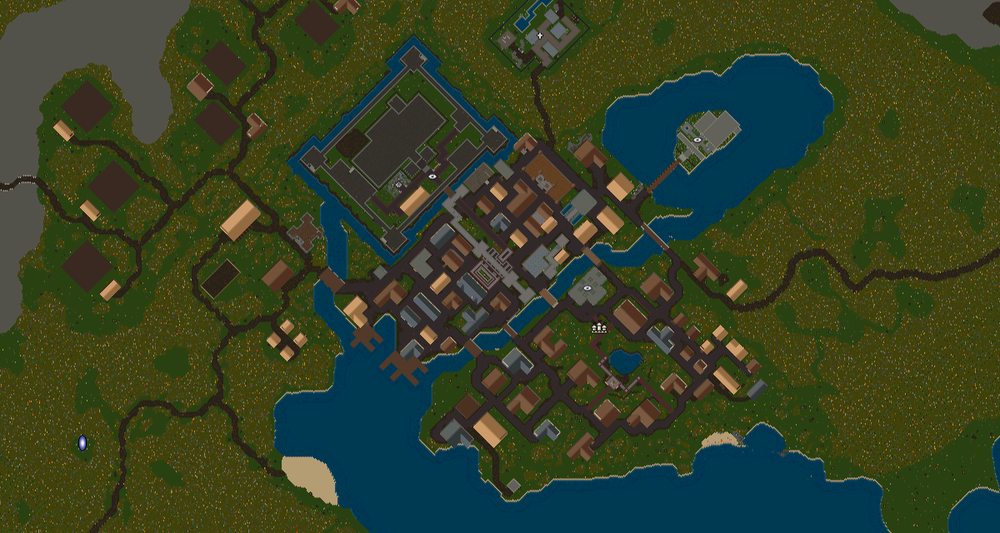

Živá mapa pro Ultima Online
Nástupce staré UO Auto-Map pro klienta OrionUO. Ukazuje tvou postavu, markery a spoluhráče v reálném čase, přímo z map tvého klienta.

Co umí
Všechno běží vedle hry. Mapa do klienta nic nezapisuje a nic do něj nevkládá.
Mapa z tvého klienta
Čte soubory mapy (.mul i .uop) a kreslí je stejnými barvami jako radar ve hře, včetně budov a stromů. Pohled otočený o 45° nebo sever nahoru, plynulé posouvání.
Pozice postavy sama
Sleduje běžící OrionUO bez skriptů a bez tlačítek. Při víc klientech si v menu Klient vybereš, kterou postavu sledovat.
Markery
Soubory markerů staré UOAM (.map) i .csv, 199 ikon. Panel s hledáním a kategoriemi, vlastní štítky, přelet na marker jedním klikem.
Spoluhráči na mapě
V místnosti chráněné heslem vidíte jeden druhého, každý ve své barvě. Když je někdo mimo výřez, ukáže ho šipka na okraji mapy.
Chat i ve hře
Chat místnosti v okně mapy i přímo ve hře (přes Orion Assistant), soukromé zprávy, historie a počítadlo nepřečtených.
Panika a sdílený bod
Panic! ukáže všem, kde potřebuješ pomoc, i se směrem nad hlavou ve hře. Sdílený marker označí místo, kam běžet. Markery jde sdílet celé místnosti.
Tracking
Hráče nalezené skillem Tracking pošleš místnosti jedním příkazem. Ostatním se ukáže malá mapa s místem a jmény.
Aktualizuje se sama
Při spuštění nabídne novou verzi a po potvrzení se sama aktualizuje. Markery a nastavení zůstanou, jak jsou.
Instalace
Nic dalšího není potřeba, .NET je v instalátoru.
Stáhni instalátor
NewUOAM-Setup.exe (vždy nejnovější verze).
Spusť ho
Windows může napoprvé ukázat „Systém Windows ochránil váš počítač“, protože instalátor není podepsaný drahým certifikátem. Klikni na Další informace a Přesto spustit. Instaluje se jen pro tvůj účet, do
%LocalAppData%\Programs\NewUOAM, bez práv správce.Spusť mapu
Zástupcem new UOAM na ploše nebo v nabídce Start. Mapa se zeptá na oprávnění správce (viz proč).
NewUOAM-…-win-x64.zip. Rozbal ho kamkoli mimo Program Files a spusť NewUOAM.App.exe. Aktualizuje se stejně.První spuštění
Dvě věci a mapa jede. Nastavení si pamatuje, příště už nic vyplňovat nemusíš.
Mapa > Nastavení…
V části Soubory mapy vyber složku klienta Ultima Online (ta, kde je
map0.mulnebomap0LegacyMUL.uop,statics0.mularadarcol.mul) a klikni na Načíst mapu. Poprvé se mapa předpočítá (desítky sekund), pak se načítá hned.Markery (nepovinné)
Ve stejném okně vyber složku se soubory markerů
.map/.csv. Když ji necháš prázdnou, hledají se ve složce mapy.Spusť hru
Jakmile se v OrionUO přihlásíš, objeví se na mapě červený čtvereček: tvoje postava.
Online > Připojit k mapě… (pro hru s ostatními)
Adresa serveru je vyplněná. Doplň heslo místnosti (dostaneš ho od správce mapy), případně zobrazované jméno (prázdné = jméno postavy) a barvu. Volba Připojit automaticky při spuštění tě příště připojí sama.
Ovládání
Mapa se ovládá hlavně myší. Klávesy fungují, když máš kliknuto do mapy.
| Co | Co to udělá |
|---|---|
| Kolečko myši | Přiblížení a oddálení |
| Dvojklik do mapy | Režim „jen mapa“: bez rámečku a menu, vždy navrchu. Tažením přesuneš okno. Dalším dvojklikem zpět. |
| ☰ (vlevo nahoře) | Panel markerů: hledání, kategorie se zaškrtávátky, klik na marker = přelet k němu |
| Pravé tlačítko na mapě | Track Player (mapa jde za postavou; vypnuto = mapu posouváš tažením), New Label…, Go to location…, Drop or Pickup Marker (bod, ke kterému běžíš, se vzdáleností), Panic! a při připojení i sdílený marker |
| Pravé tlačítko na markeru | Upravit, smazat, Sdílet s místností |
| Šipka na okraji mapy | Ukazuje k tvé postavě nebo ke spoluhráči mimo výřez. Klik na tvou šipku = zpět k postavě. |
| Psaní do mapy | Otevře chat místnosti (když jsi připojený) a rovnou do něj píše |
| Mezerník v mapě | Zapne tvou paniku, nebo vypne paniku, která v místnosti běží |
| Chat | Enter odešle. Dvojklik do zpráv = malé okno navrchu. 👥 hráči v místnosti se vzdáleností, 🗑 vymaže historii. |
| Menu Klient | Výběr sledovaného klienta, když jich běží víc |
Příkazy ve hře
Píšou se do hry jako běžná řeč. Do hry se neodešlou, zpracuje je mapa. Potřebují běžící mapu a Orion Assistant.
| Příkaz | Co dělá |
|---|---|
-c zpráva | Zpráva do chatu místnosti |
-c jméno>zpráva | Soukromá zpráva. Stačí začátek jména, pokud je jednoznačný. |
-who | Kdo je v místnosti, jak daleko a kterým směrem |
-panic / -unpanic | Zapne / vypne paniku. Ostatním mapa přeletí k tobě, nad hlavou uvidí směr a vzdálenost. |
-t jméno, jméno | Pošle místnosti hráče nalezené Trackingem (s tvou pozicí) |
-t sám. Zkopíruj ho do složky OA u Orion Launcheru a spusť TrackPlayers na záložce Scripts. Je nepovinný.Co mapa posílá ven
Celý kód, včetně serveru, je veřejný. Tady je to stručně.
Ve tvém počítači
Z paměti klienta jen čte pozici tvé postavy. Nic do hry nezapisuje ani nevkládá. Zprávy do hry jdou přes rozhraní, které k tomu Orion Assistant nabízí.
Na server
Jen když se připojíš do místnosti: jméno, barva, pozice, chat, sdílené markery, panika a tracking. Vidí je jen lidé ve stejné místnosti. Server je drží jen v paměti. Do provozního logu zapíše příchod a odchod (jméno, IP adresa), paniku, sdílený marker a tracking, ale ne obsah chatu ani průběžné pozice.
Časté potíže
Proč mapa chce práva správce?
OrionUO často běží jako správce, a pak Windows nedovolí číst pozici postavy programu bez těchto práv. Když dotaz odmítneš, mapa poběží, ale pozici takového klienta neuvidí (hlásí „Přístup byl odepřen. Spusť mapu jako správce.“).
Mapa neukazuje mou postavu
Musíš být ve hře přihlášený (ne na přihlašovací obrazovce). Ve stavovém řádku dole uvidíš, co se děje. „neznámá verze…“ znamená novou verzi OrionUO. Mapa se ji pokusí rozpoznat sama, a když to nepůjde, napiš autorovi.
Mapa je prázdná nebo se nenačte
V Mapa > Nastavení je vybraná špatná složka. Musí to být složka klienta, ve které je map0.mul nebo map0LegacyMUL.uop a radarcol.mul.
Zprávy ani příkazy ve hře nefungují
Potřebují Orion Assistant a přihlášenou postavu. Mapa musí běžet. Když zapneš mapu až po spuštění klienta, příkazy se zaregistrují za pár sekund.
„Nepodařilo se připojit k mapě“
Zkontroluj heslo místnosti. Chyba 107 znamená, že stejné jméno už v místnosti někdo používá; nastav si jiné zobrazované jméno.
Jak mapu odinstaluju?
Nastavení Windows > Aplikace > new UOAM. Tvoje nastavení a markery zůstanou v %LocalAppData%\NewUOAM pro případ, že ji nainstaluješ znovu. Chceš-li je smazat, smaž tu složku ručně.